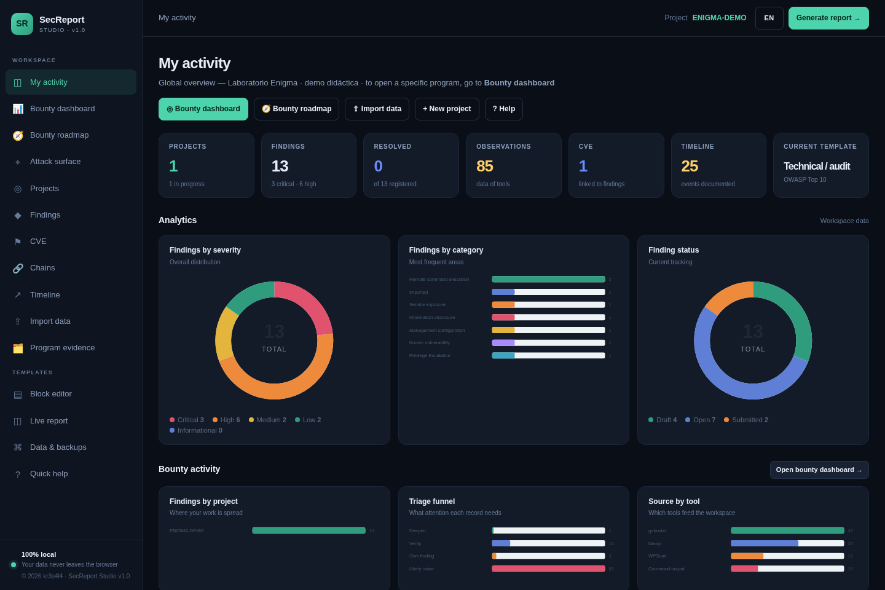
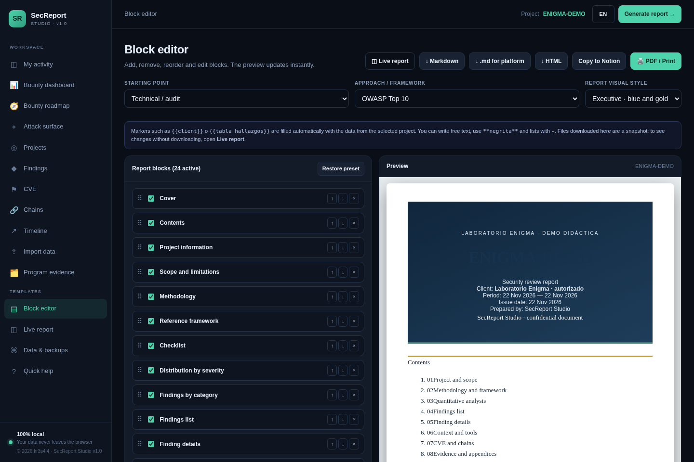
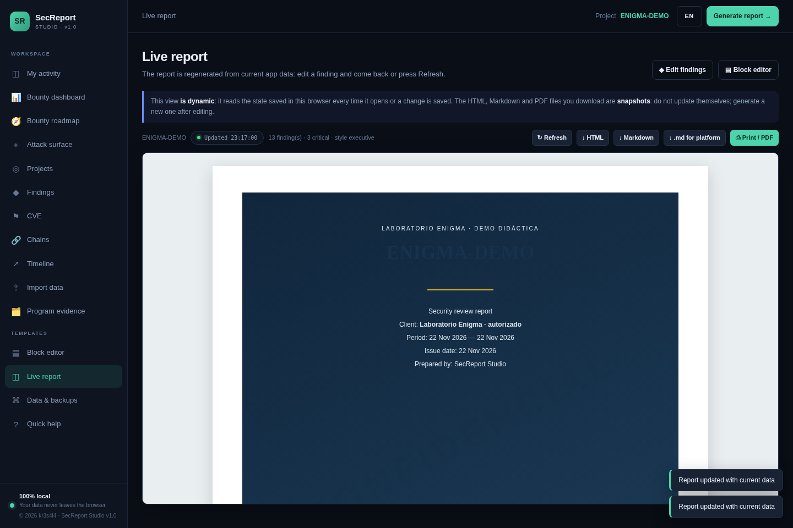
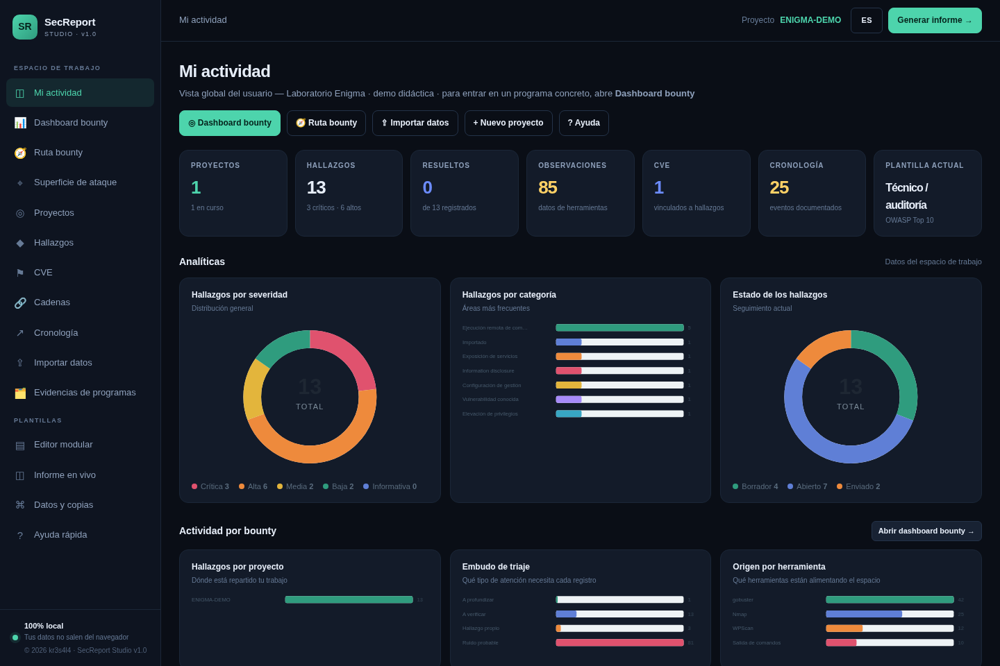
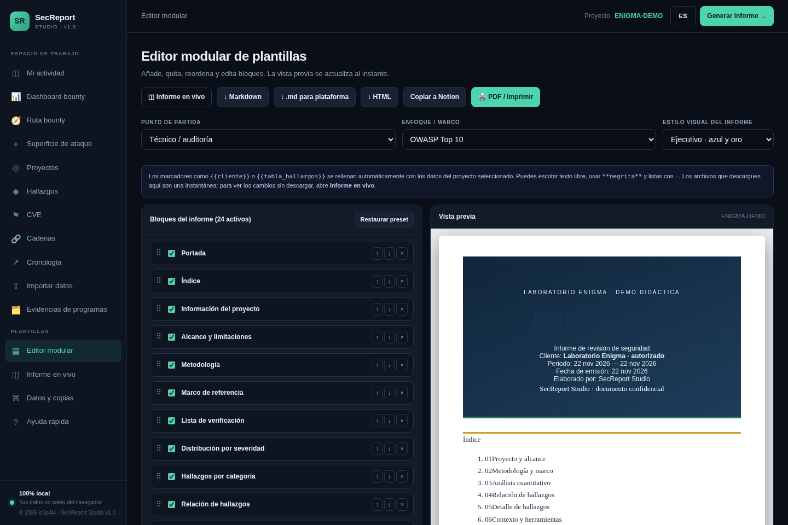
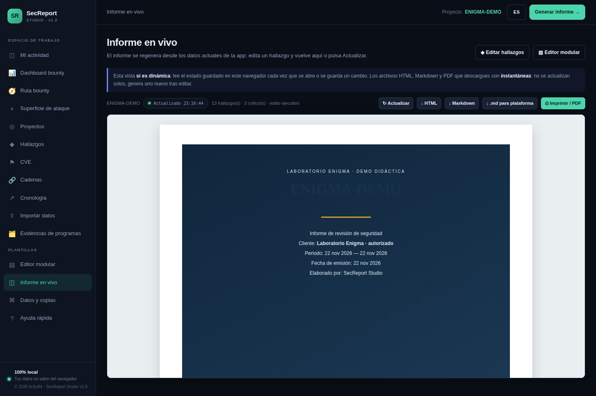

SecReport Studio v1.0
Un solo archivo HTML para organizar hallazgos y generar informes de pentest y bug bounty. Sin instalación, sin servidor y sin internet.
25 € · entrega automática
Idioma / Language: Español · English
← Volver al catálogo · Portafolio
Ficha del proyecto. Para ver el resto, vuelve al catálogo de proyectos.
Un solo archivo HTML para organizar hallazgos y generar informes de pentest y bug bounty. Sin instalación, sin servidor y sin internet.
25 € · entrega automática
SecReport Studio es una aplicación offline de un solo archivo para preparar informes de pentest y bug bounty. Se descarga como ZIP, se abre index.html con doble clic y funciona en cualquier navegador moderno de Windows, macOS o Linux. No requiere instalación, servidor, cuenta ni conexión a internet.
Está pensada para la parte que llega después de la prueba: convertir salidas de herramientas y notas dispersas en un informe claro. Importa CSV, TSV, TXT, JSON y JSONL reconociendo 19 formatos de nmap, ffuf, gobuster, Burp Suite, Nuclei, ZAP, NVD y OSV; permite revisar y corregir cada fila antes de importar; agrupa los CVE dentro de su hallazgo; y ofrece 31 bloques editables, 8 marcos de referencia y 5 estilos para dar forma al documento. Con un botón se cambia entre español e inglés, y se exporta a HTML, PDF, Markdown, Notion o a un «.md para plataforma».
No es una herramienta de hacking: no escanea, no explota nada y no ejecuta pruebas. Solo organiza datos y genera informes a partir del trabajo que ya has hecho. Los datos se guardan en el almacenamiento local del navegador y se pueden exportar a JSON.
El export «.md para plataforma» usa un formato neutro. Adapta los campos a las instrucciones de cada programa: no implica compatibilidad oficial con ninguna plataforma.
Interfaz en inglés



Interfaz en español



Capturas de la demo incluida con 98 hallazgos. En las capturas en inglés se traducen la interfaz y los rótulos generados; los datos de la demo no se traducen.
Descarga el ZIP desde Gumroad, descomprímelo y abre index.html con doble clic. No hay que instalar nada ni levantar ningún servicio. Los datos se guardan en el almacenamiento local del navegador y se pueden exportar a JSON desde «Datos y copias».
La aplicación es completamente offline y no contiene telemetría. No llama a servidores, no crea cuentas y no sincroniza nada. Lo que escribas se queda en tu navegador hasta que lo exportes o lo borres.
Es un producto de pago único de 25 €, entregado automáticamente desde Gumroad. La licencia permite generar informes para tus clientes sin límite, pero no revender ni redistribuir la plantilla. No hay suscripción ni versiones premium.
← Back to catalogue · Portfolio
Project page. For the rest of the work, go back to the project catalogue.
A single HTML file to organise findings and generate pentest and bug bounty reports. No installation, no server and no internet.
€25 · automatic delivery
SecReport Studio is an offline, single-file app for preparing pentest and bug bounty reports. Download the ZIP, open index.html with a double click and it runs in any modern browser on Windows, macOS or Linux. No installation, server, account or internet connection needed.
It is built for the work that comes after the test: turning tool output and scattered notes into a clear report. It imports CSV, TSV, TXT, JSON and JSONL with 19 profiles for nmap, ffuf, gobuster, Burp Suite, Nuclei, ZAP, NVD and OSV; lets you review and fix every row before importing; keeps CVEs inside their finding; and offers 31 editable blocks, 8 reference frameworks and 5 report styles. One button switches between Spanish and English, and you can export to HTML, PDF, Markdown, Notion or a platform-ready .md file.
It is not a hacking tool: it does not scan, exploit or run any tests. It only organises data and generates reports from work you have already done. Data is stored in the browser's local storage and can be exported to JSON.
The platform-ready .md export uses a neutral format. Adapt the fields to each program's instructions: it does not imply official compatibility with any platform.
English interface
Spanish interface
Screenshots from the included demo with 98 findings. The app translates the interface and generated labels; demo data is never translated.
Download the ZIP from Gumroad, unzip it and double-click index.html. Nothing to install and no service to run. Data is saved in the browser's local storage and can be exported to JSON from "Data and backups".
The app is fully offline and contains no telemetry. It does not call any server, create accounts or sync anything. What you write stays in your browser until you export or delete it.
A single payment of €25, delivered automatically from Gumroad. The licence lets you generate reports for your clients with no limits, but does not allow reselling or redistributing the template. No subscription and no premium tiers.